|
MachV/Mozilla: Mail: Import
|
UI Specification
|
Import
|
Last Modification:
|
|
Author: Jennifer Glick
Creation Date: 3 October 2001
|
Status: Draft
|
|
Quicklinks
|
Feature Team
|
Engineering:
|
Scott Putterman,
Srilatha Moturi, Seth Spitzer.
|
|
PM:
|
Gregg Landskov, Kevin
Murray
|
|
QA:
|
Esther Goes, Ninoschka
Baca
|
|
Docs:
|
Robin Foster
Clark
|
|
UE
|
Jennifer
Glick
|
|
Bugs
- 70530 - After importing, what account names should
appear?
- 86991 - imported mail needs to be placed as subfolder to
"Local Folders" instead of as new incoming servers.
- 99936 - Import Address Books, what should address book names
be?
- 115701 - Import Text label should be more descriptive (ldif,
ldi, csv, tab, txt)
- 117844 - Import Mail and Import Settings dialog blank on
linux
- 118817 - Re-import mail settings, display message that
accounts already exist
Open Issues
- What if multiple accounts? Bring them all in or ask? Bring
them all in - verify with Kevin.
- What if its a Netscape account? An some accounts have already
been migrated. Add "2" to name? Tell user there is a dup
account?
- Dup because of server info or account name?
- Does account bring in local messages as well?
- Local Pop - pull into account. Local Folders all pulled into a
"Product" folder with subfolders or folder names.
- Messages only with mult accounts. "Outlook Express" local
folder, Accts folders with subfolders.
- New Account Wizard. Option to import. Take them first screen
of Import Wizard? Or assume they want to import and Account (vs
Messages vs AB).
- List of application options, can we list only detected
software? Future? No programs detected.
- Complete screen, higher level summary, for accts.
- What if multiple ABs? Local only. Don't worry about LDAP for
now.
- Is multiple identities an issue?
- Most apps merge pop accounts into the same hierarcy. When we
migrate those accounts can we separate them out?
Design Overview
Summary
Provide users with an easy and straight forward method to import
Accounts, Messages and/or Address Books from other applications.
Design Details
When Messages only are imported, they will appear under Local
Folders, in a folder with the name of the application from which the
message were imported. For example:
- Local Folders
Unsent Messages
Drafts
Templates
Sent
Trash
Outlook Express Mail (subfolders within this folder as
nec)
If an Account is imported, it should appear at account level in
Mail.
When messages only are imported, its folders are treated as
generic folders (no special folders).
On completion of message import, the Local Folders twistie is
expanded and the newly imported folder has focus. On completion of
account import, the newly imported account is expanded and has
focus.
A. Import Wizard
Note: Purple text in dialogs
is alternate text depending on what application is selected.
1. Account
Screen 1
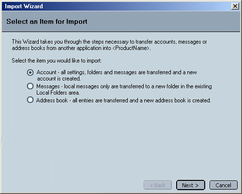
Screen 2
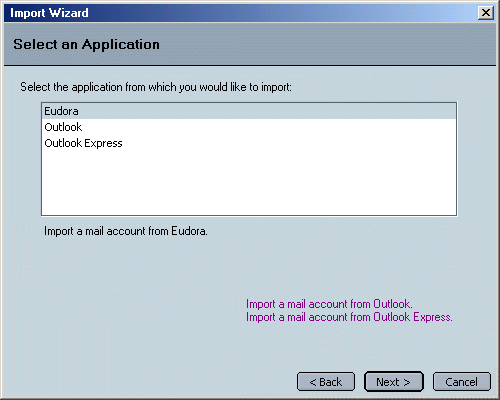
Screen 3 - Optional As Necessary
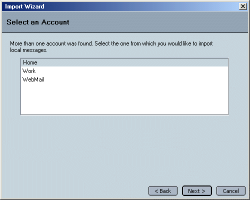
Screen 4
Screen 5
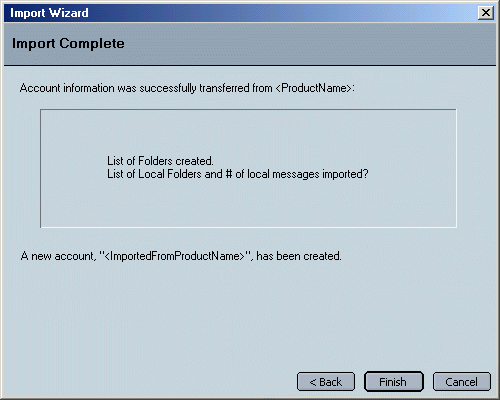
2. Messages
Screen 1

Screen 2
Screen 3 - Optional As Necessary
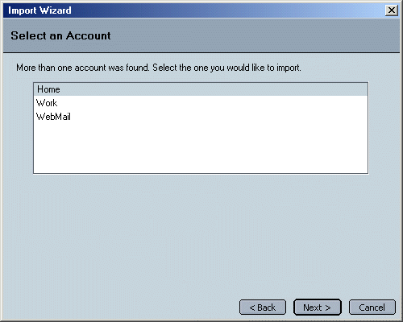
Screen 4
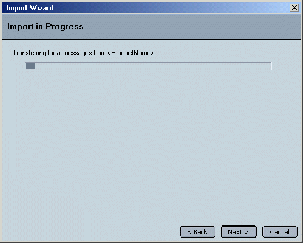
Screen 5

3. Address Book
Screen 1
Screen 2
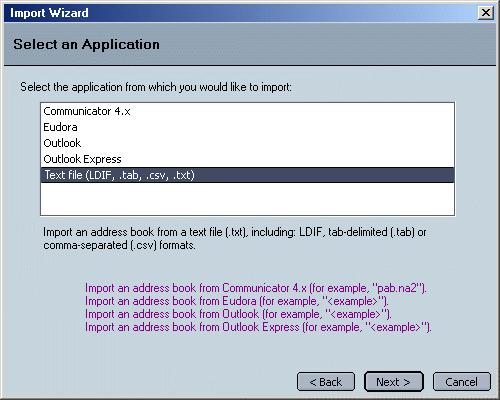
Screen 3 - Optional As Necessary
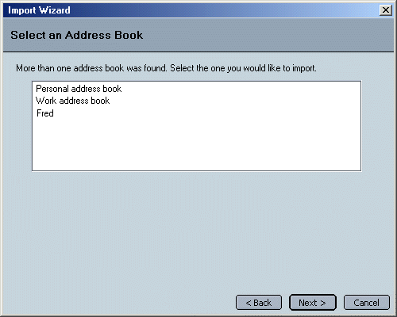
Screen 4a - Mail Apps, Text File - LDIF
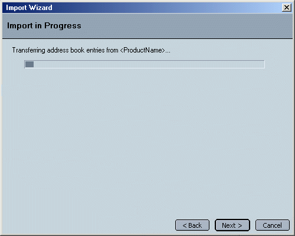
Screen 4b - Text Files- .tab, .cvs, .txt
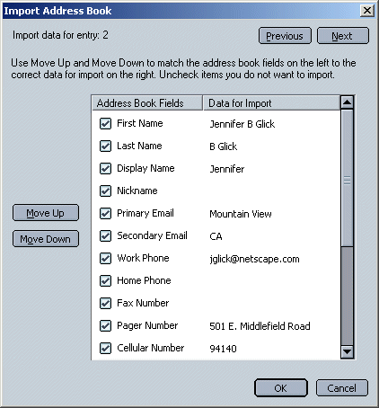
Screen 5
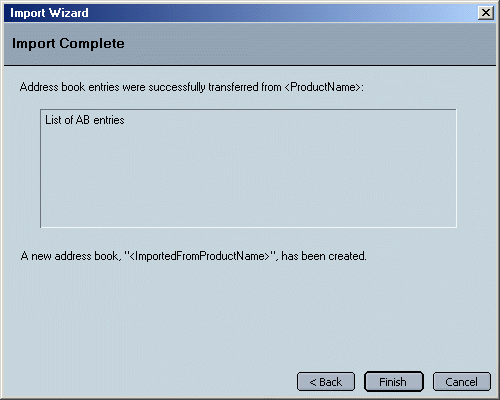
Issues